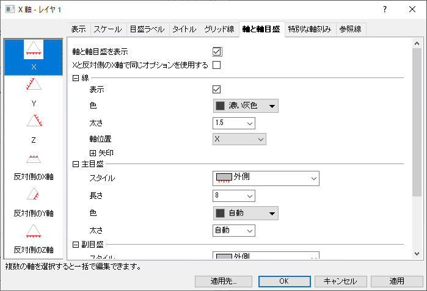
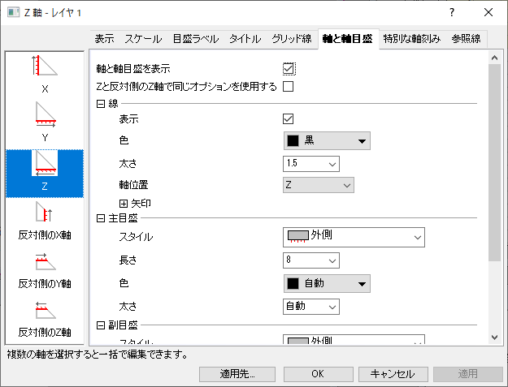
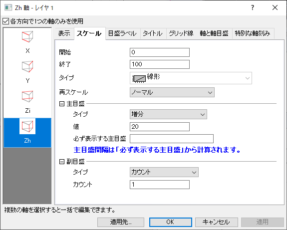
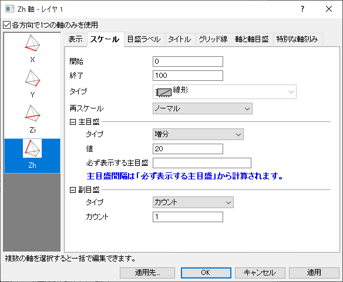

三角および四面体座標の軸ダイアログボックスはツリービューダイアログになっており、X/Y/Z/Zh軸の制御や目盛の編集ができます。このダイアログは、三点グラフ、三点等高線図、トリリニアダイアグラムの三点グラフ、3D 三点グラフ、3D 三角錐グラフ（Quaternary Phase Diagrams）で使用されます。ダイアログを開くには、軸上でダブルクリックするか、メニューのフォーマット：軸スケール/軸目盛のラベル/軸のタイトルを選択します。
|  |  |
| 2D 三点グラフの軸ダイアログ | 2D 直角三角形の三点グラフの軸ダイアログ |
|  |  |
| 3D 三点グラフの軸ダイアログ | 3D 三角錐グラフの軸ダイアログ |
左パネルで軸アイコンを選択して、右パネルの設定にアクセスします。
3D 三点グラフでは、各方向で1つの軸のみを使用チェックボックスにチェックがついていると（デフォルト）、下部XYZ平面の軸のみ表示されます。チェックを外すと、上部平面のXYZ軸用の設定が表示されます。下側XYZ平面のXYZ軸は、「下軸」と表示され、上側XYZ平面の軸は「上軸」と表示されます。
3D 三角錐グラフ（Quaternary Phase Diagrams）では、各方向で1つの軸のみを使用チェックボックスにチェックがついていると、2つの下部軸と1つのZh軸のみ表示されます。チェックを外すと、3番目の下軸が表示されます。それぞれの軸を個別に編集できます。
チェックがついていても、すべての軸が同時に表示されるわけではないことに注意してください。軸の表示は、グラフレイヤの方向にも関連しています。グラフを回転すれば、ほかの軸を表示することができるはずです。
| X/Y/Z 軸を表示 | このチェックボックスにチェックまたはチェックを外し、軸を表示または非表示にします。直角三角形の三点グラフでは、デフォルトでＺ軸は非表示になっています。表示に変更すると、Ｙ軸とは反対方向のスケールが表示されます。 |
|---|---|
| 反対側のX/Y/Z 軸を表示 | デフォルトで、2D三点グラフには、フルスケール範囲（0-1または0-100）に設定された3つの主軸があります。軸ダイアログの左パネルには、ほとんどの場合で、使用せず有効になっていない3つの「反対」軸がある場合もあります。
スケールタブの開始および終了の値を制限することにより、主軸のスケール範囲の一部 を使用する2D三点グラフを作成でき、そのときに「反対」軸が必要になります。例えば、3つの主軸全てのスケール範囲の制限によって、軸が互いに反対のひし形のグラフを作成できます。詳細は、こちらのOriginLabのブログを参照してください。 |
| 反対の軸の表示位置 | 反対の軸をどこに表示するかを指定できます。平行軸または次の軸に反対の軸を配置することを選択できます。
LabTalkコマンドlayer.Axis.adj=0/1を使用して、反対の軸の位置を切り替えることもできます。たとえば、 |
| 軸を表示 | 下軸 (デフォルト)、上軸、なし |
|---|---|
| 方向 | 目盛ラベル、軸タイトル、目盛の刻みの方向を設定します。デフォルトは、レイヤ設定に従うです。各軸の方向は軸ダイアログボックスのこの項目で設定できますが、レイヤレベルの作図の詳細ダイアログの軸タブにある、ラベルとタイトルの目盛の向きで、レイヤ内の全軸に対して設定できます。 |
全てのタイプに共通して線形の軸スケールのみに対応しています。
| 開始 |
このテキストボックスに開始値をセットします。 |
|---|---|
| 終了 |
このテキストボックスに終了値をセットします。 |
| タイプ |
線形の軸スケールのみに対応しています。この項目は読み取り専用で設定できません。 |
| 再スケール |
これらの軸再スケールモードの詳細については、こちらを参照してください。 |
| 主目盛 |
主目盛のタイプ、値、必ず表示する主目盛を設定します。（主目盛のセクションを参照してください） |
| 副目盛 |
副目盛のタイプを指定します。（副目盛のセクションを参照してください） |
目盛ラベルタブとそのサブタブでは、軸目盛ラベルの設定を行います。サブタブは、表示、フォーマット、副目盛ラベルタブで構成されます。
| 表示 | 表示タブの設定は、このページを参照してください。 |
|---|---|
| フォーマット | フォーマットタブの設定は、このページを参照してください。 |
| 副目盛ラベル | 副目盛ラベルタブの設定は、このページを参照してください。 |
タイトルタブの設定は、このページを参照してください。
グリッド線タブの設定は、このページを参照してください。
軸と軸目盛タブの設定は、このページを参照してください。
特別な軸刻みタブの設定は、このページを参照してください。
このタブは、2D三点グラフと三点等高線図で利用できます。
デカルト座標の軸と同様に、2D三点グラフまたは三点等高線図の3つの軸すべてに参照線を追加できます。参照線は、その軸からみて左に隣接する軸に平行な直線として三角形の枠内に表示されます。
参照線タブの設定は、このページを参照してください。